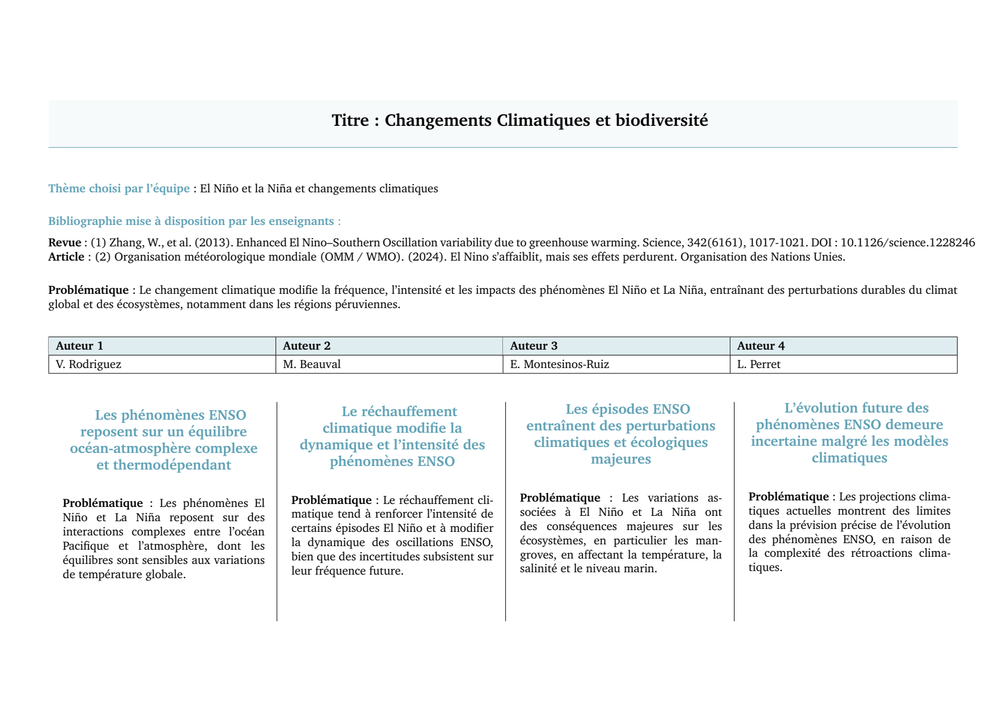
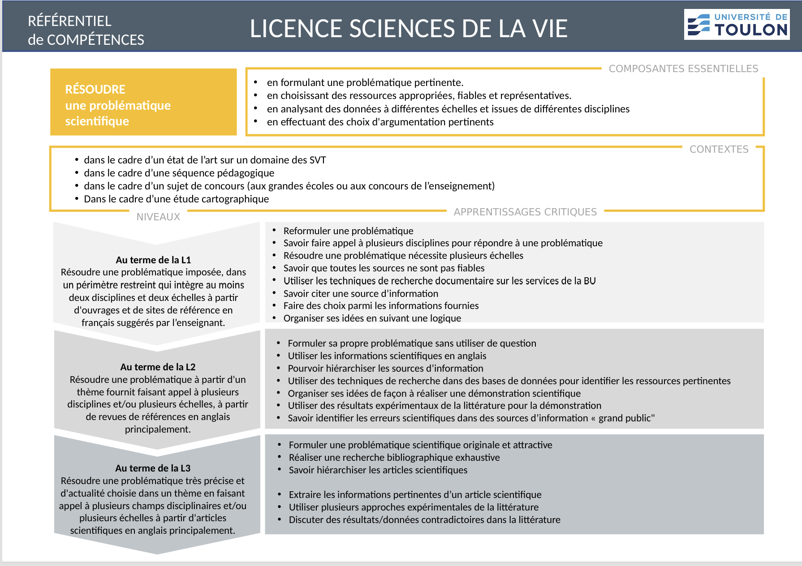
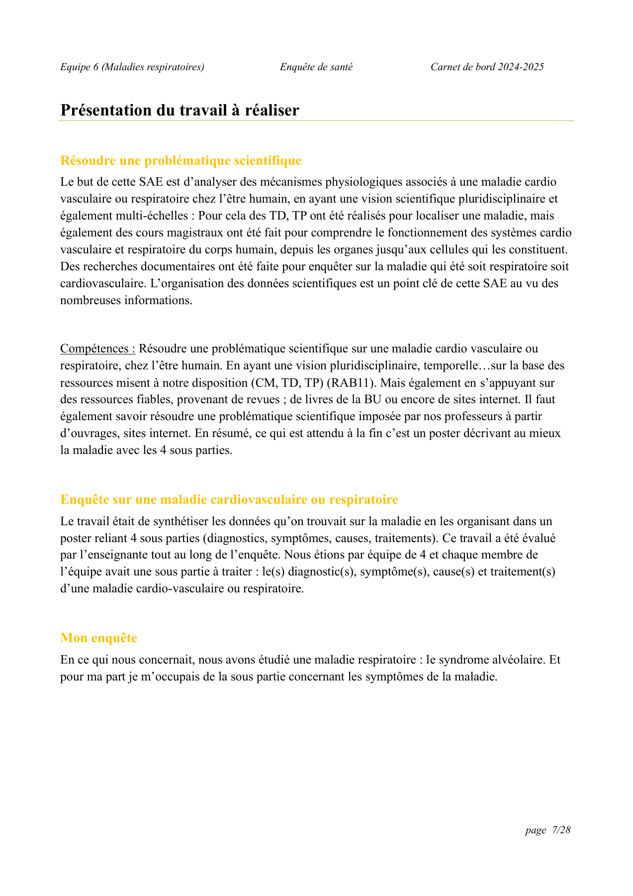
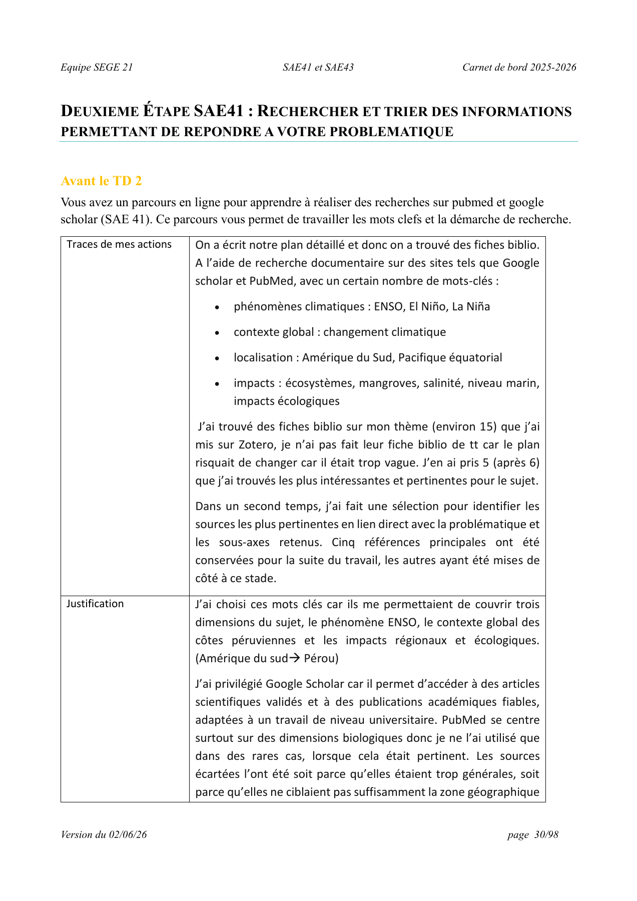
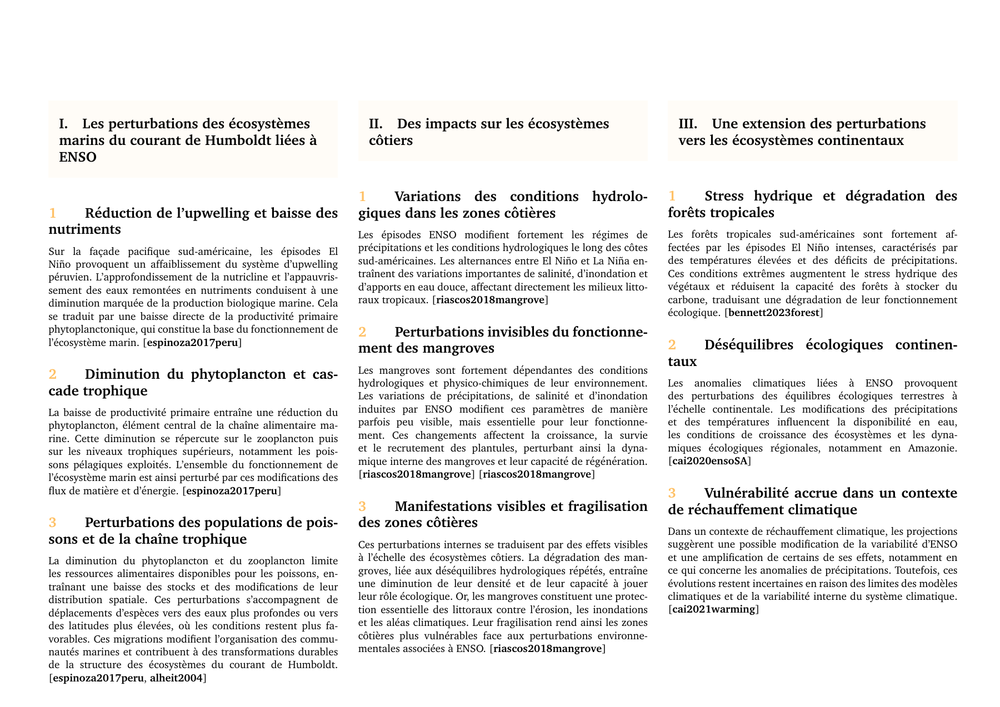
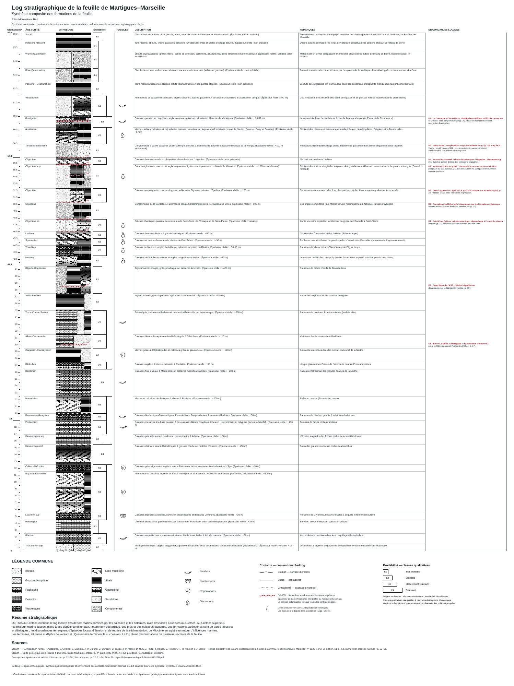
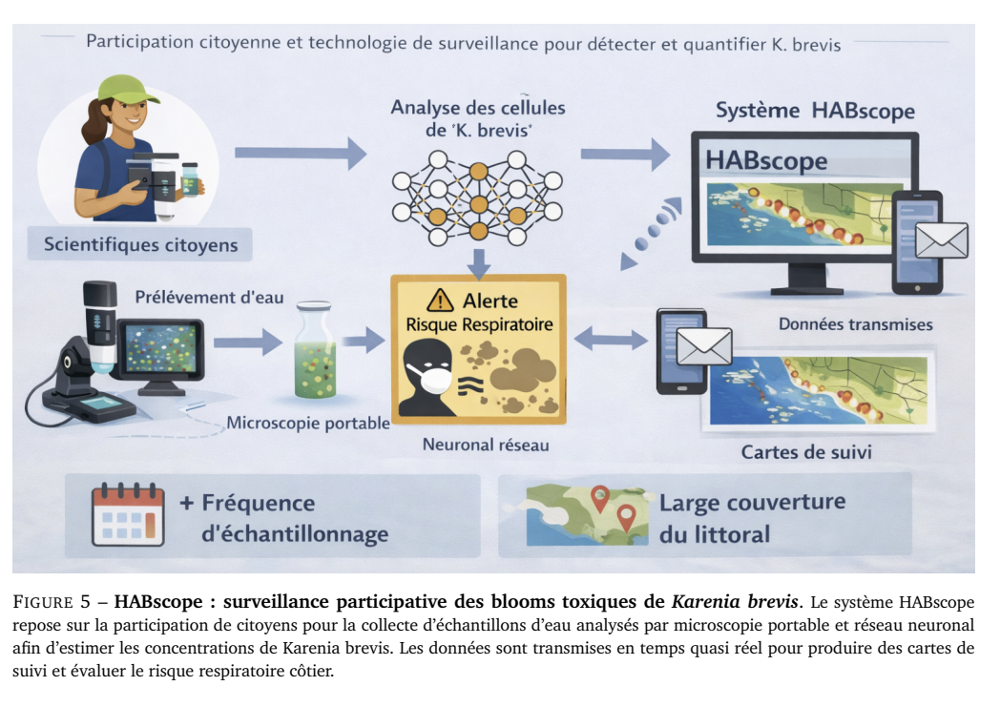

L1 · SAÉ11
Syndrome alvéolaire
Mon rôle : la partie symptômes. Cadrage et carnet consultables ci-dessous.
Voir la preuveRésoudre une problématique scientifique
Un fil conducteur dans ce dossier : Quels sont les impacts environnementaux d’ENSO en Amérique du Sud, et comment ces impacts climatiques et écologiques pourraient-ils évoluer dans un contexte de réchauffement climatique ?

Agrandir la preuveÀ regarder : Dans la troisième colonne, mon axe porte sur les impacts environnementaux. La question ci-dessus vient de ma fiche personnelle de résolution, page 1.
En travaux · dossier non finalisé
Université de Toulon · Licence Sciences de la Vie
Ces repères décrivent les attendus de la formation. Ils ne constituent pas une validation de mes acquis. Les extraits du dossier indiquent ce qui est effectivement documenté.

Agrandir le référentielLes travaux de mon parcours
L1 · SAÉ11
Mon rôle : la partie symptômes. Cadrage et carnet consultables ci-dessous.
Voir la preuveL1 · SAÉ21
Projet indiqué dans mon parcours ; livrable personnel non retrouvé.
L2 · SAÉ31
Ma section signée de la revue : sélectionner et articuler les méthodes de prédiction.
Voir la preuveL2 · SAÉ41
Ma question, mon plan et ma recherche bibliographique.
Voir la preuveL3 · SAÉ511
Mes parties SedLog, puis le log assemblé avec les aides précisées.
Voir la preuveDu cadrage imposé à mon axe de recherche
L2 · SAÉ 41 · PREUVE PRINCIPALE · 2025–2026
À partir des sources imposées, notre groupe a envisagé plusieurs questions sur ENSO. J’ai pris en charge l’axe consacré aux impacts écologiques. La troisième colonne de la fiche porte mon nom ; mon carnet explique pourquoi nous avons écarté les pistes trop larges et retenu une question liée aux informations disponibles.
La fiche montre la délimitation de mon axe dans le travail collectif. Les pages 17 à 19 du carnet rendent le choix vérifiable : questions envisagées, justification des sources, pistes écartées et attribution personnelle.
Portée et limites. Il s’agit d’un travail bibliographique : ces documents ne prouvent pas que j’ai mesuré moi-même les effets d’ENSO. Mon apport personnel porte sur le troisième axe, pas sur toutes les parties du groupe.
L1 · SAÉ 11 · 2024–2025
Dans l’enquête sur le syndrome alvéolaire, je m’occupais des symptômes. Le sujet et les quatre sous-parties étaient imposés. Ce point de départ diffère du travail ENSO, où le carnet conserve les pistes discutées et le choix de mon axe.

Agrandir la preuveÀ regarder : Le paragraphe « Mon enquête » identifie ma contribution. Le contexte explique les disciplines et les échelles à mobiliser.
Pour voir comment ce travail a été présenté : le teaser et mon intervention en amphi.
Fiabilité · pertinence · traçabilité
Pour ENSO, mon carnet décrit une recherche avec Google Scholar et PubMed, puis un tri d’environ quinze références vers six fiches retenues. Je sélectionne selon le sujet, la zone étudiée et l’apport par rapport aux références déjà présentes ; la quantité ne suffit pas à rendre une bibliographie pertinente.

Agrandir la preuveÀ regarder : Le bloc « Traces de mes actions » relie mots-clés, sélection et Zotero. Ce récit documente ma méthode ; il ne prouve pas une recherche exhaustive.
Pour Martigues, la carte et la notice du BRGM servent de références géologiques. Un portfolio d’exemple peut aider à présenter un log ; il ne remplace pas ces sources pour interpréter les formations.
Du milieu au territoire
L2 · SAÉ 41 · 2025–2026
Ma fiche personnelle organise les impacts d’ENSO dans les milieux marins, côtiers et continentaux d’Amérique du Sud. Ce plan relie climatologie et écologie, au lieu de juxtaposer des exemples sans préciser leur milieu.

Agrandir la preuveÀ regarder : Les rubriques distinguent les milieux. Des clés bibliographiques non résolues restent visibles : la version conservée n’est pas présentée comme parfaitement finalisée.
L3 · SAÉ 511 · 2026–2027
J’ai préparé mes quatre parties dans SedLog et mes cartes sur papier. Le log met en relation les formations et les informations de la notice. Un coéquipier m’a aidé pour le SIG ; l’assemblage des exports a bénéficié d’une assistance IA suivant mes instructions.

Agrandir la preuveÀ regarder : Lire ensemble les unités, les figurés et les sources de la légende. Les graduations schématiques ne permettent pas de comparer directement toutes les épaisseurs réelles.
La présence de plusieurs périodes ne prouve pas à elle seule que toute l’histoire géologique est reconstruite. Les discordances et les classes d’érodabilité demandent une justification située dans les sources.
Une synthèse qui reste liée à ses sources
L2 · SAÉ 31–33 · SYNTHÈSE ARGUMENTÉE · 2025–2026
Dans la revue de mon équipe, ma section est signée aux pages 8 et 9. J’y organise une réponse sur la surveillance et la prévision des blooms de Karenia brevis : observations satellitaires, suivi local et modèles. Je signale notamment la limite de la télédétection dans les eaux côtières turbides et je rassemble les références utilisées.

Agrandir la preuveÀ regarder : La figure HABscope représente une méthode issue de la littérature. Les références et la conclusion sont à lire dans les pages complètes ; ce n’est pas une manipulation réalisée par moi.
Cette section montre une réponse structurée, avec des arguments reliés aux sources, une conclusion et une figure de synthèse. Elle complète ENSO en montrant le passage de la question à une production aboutie.
Portée et limites. Les prélèvements, les modèles et les performances évoqués sont ceux des études citées. Je ne présente pas la figure HABscope comme une expérience que j’aurais réalisée ni comme la preuve que j’ai entraîné un modèle.
L1 · L2 · L3
SAÉ11 : traiter les symptômes au sein d’une enquête définie, à partir des ressources de cours et de la recherche documentaire.
ENSO : délimiter mon axe et sélectionner des références. Karenia : organiser une synthèse signée avec une conclusion et des limites.
Martigues : relier formations, notice et log, en distinguant mes choix des opérations assistées. La compétence reste à approfondir ; une belle carte ne suffit pas à valider l’interprétation.
Ce sont des projets différents, pas deux versions du même document. Je compare ce qui m’est demandé et la façon dont je travaille.
Prendre du recul
Mon point d’appui est l’organisation des informations autour d’un sujet. Je dois encore mieux relier chaque affirmation à sa source et vérifier les références jusque dans la version finale. Dans mes prochains travaux, je veux garder une trace des pistes écartées et des incertitudes, pas seulement de la réponse retenue.
ENSO relie climat et écosystèmes ; Karenia m’a fait découvrir des méthodes de suivi et de prédiction ; Martigues m’a fait travailler sur les formations géologiques.
Délimiter mon axe, sélectionner des références, organiser une synthèse et relier une figure à son argument.
Expliquer mes choix, reconnaître les aides reçues et revenir sur une interprétation quand les sources ne suffisent pas.
J’ai adoré écrire la revue sur Karenia. Martigues était intéressant, même si c’est moins proche de ce que je souhaite faire ensuite. La faune et l’écologie restent ce qui m’attire le plus.